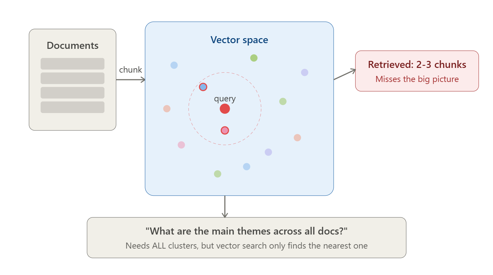

GraphRAG: a technical deep dive into graph-augmented retrieval
Vector RAG is great at finding chunks. It is bad at answering questions whose answer doesn't live in any single chunk. GraphRAG fixes that by building a graph and a hierarchy of summaries at indexing time, so synthesis becomes a retrieval problem instead of a hope.

What is GraphRAG?
GraphRAG is a retrieval-augmented generation (RAG) technique that turns a document corpus into a knowledge graph before any question is asked. An LLM reads every chunk and extracts entities (people, systems, concepts) and the relationships between them. A community-detection algorithm groups densely connected entities into nested communities, and the LLM writes a community summary for each one. At query time, retrieval runs over that structure rather than raw chunks alone: walk an entity's neighborhood for specific questions, or map-reduce over community summaries for corpus-wide ones. The result is handed to an LLM to write a grounded answer.
The approach comes from Microsoft Research (Edge et al., 2024); this article follows their open-source implementation, microsoft/graphrag.
1. The problem with vector RAG
The default RAG recipe is straightforward. Split documents into chunks, embed them, store the vectors, and at query time pull the top-k chunks closest to the embedded question. Hand that context to an LLM. It works well for a narrow class of questions.
That class is localized factual lookups. "What's the refund policy?" "Which clause covers force majeure?" "What did Alice say in the Q3 review?" These answers sit inside one or two chunks, so vector similarity hands the LLM exactly what it needs.
The problems start the moment a question requires aggregation across the corpus. Try this one against 200 project post-mortems:
"What are the recurring risks across all 200 project reports?"
The answer doesn't live anywhere. It's distributed. Top-k similarity returns the chunks that look most like the question, not a representative sample of risk language across the corpus. You get five paragraphs that say the word "risk" near other words from the query. The LLM does its best, then hallucinates the rest. There is no pre-computed clustering, no aggregation step, no notion of "what this corpus is mostly about" — just nearest neighbors, every time.

This isn't a tuning problem. You can't reliably fix it with a better embedding model or a larger k: raising k buys coverage linearly in context tokens, and it's still biased toward chunks that resemble the question. The retrieval primitive — point-wise similarity over chunks — has no mechanism for synthesis. Synthesis is what the LLM is supposed to do at the end of the pipeline, but you can't synthesize what was never retrieved.
Do the structural work at indexing time. Extract entities and relationships, build a graph, partition it into communities, and have an LLM summarize each community before any query arrives. Now there are two retrieval primitives instead of one: walk the graph from a starting entity, or fan out across pre-written community summaries. Synthesis becomes retrieval over summaries — a thing plain top-k vector RAG can't do because it has no summaries to retrieve.
2. The GraphRAG pipeline at a glance
Four steps. Each one is load-bearing.
- Entity & relationship extraction. One extraction call per text chunk (plus one "gleaning" follow-up call by default) produces structured tuples — entities with descriptions and typed relationships with strength scores.
- Graph construction. Entities become nodes, relationships become edges. Edge weights are the sum of LLM-assigned strengths, not co-occurrence counts.
- Hierarchical community detection. The Leiden algorithm partitions the graph recursively into multi-level clusters. Each level trades granularity for cost.
- Community summarization. An LLM writes a structured report for every community at every level. These reports are the artifact global search consumes — pre-computed reasoning, persisted to disk.
The split that matters is build-time vs query-time. Vector RAG does almost nothing at indexing — it embeds and stores. Querying is where all the work happens, and the LLM has to do every bit of reasoning from scratch on context that was retrieved by similarity alone. GraphRAG pushes the work the other way. Indexing is expensive: hundreds to thousands of LLM calls before a user has asked anything. In exchange, query time inherits a graph and a hierarchy of human-readable summaries the LLM can lean on.
Defaults, CLI commands, and table schemas in this article were checked against microsoft/graphrag v3.3.0 (October 2026). GraphRAG's config keys, output schemas, and CLI have changed across major versions (0.x → 1.x → 2.x → 3.x), so check config/defaults.py and breaking-changes.md in the repo for the version you run.
| Vector RAG | GraphRAG | |
|---|---|---|
| Retrieval | Top-k chunk similarity | Graph traversal + community summaries |
| Good at | Specific, localized facts | Specific facts and cross-corpus synthesis |
| Weak at | "Themes across", "recurring", "compare" | Entity-resolution errors, stale summaries, cost/latency tradeoffs |
| Indexing cost | Low (embed + store) | High (~2 LLM calls per chunk with default gleaning, + description summaries, + 1 per community) |
| Query latency* | ~1s | Local 1–2s, global 5–15s, drift 10–30s |
| Provenance | Chunk-level: document IDs, metadata, chunk citations | Chunk-level, plus entity/relationship/community IDs to explore evidence through relationships |
| Freshness | Append a chunk and you're done | graphrag update appends new data; existing communities aren't re-clustered, so a periodic full re-index is still needed |
* Latencies are illustrative orders of magnitude from our deployments, not benchmarks. They depend heavily on the model, corpus size, community level, and request concurrency.
3. Chunking: the most underrated knob
Chunk size is the upstream knob that controls every downstream quality metric in GraphRAG — extraction precision, graph connectivity, community coherence, summary quality, and ultimately the answer.
The default scheme is unglamorous: fixed-size token windows with overlap. Microsoft's reference implementation ships with 1200 tokens per chunk and 100 tokens of overlap, splitting on token count (not sentences or paragraphs). Every chunk keeps its document_id. If you want the extraction prompt to see document fields such as the title, enable chunking.prepend_metadata; it's off by default.

Size is a cost decision and a quality decision, and the two pull opposite ways. The table below is a rule of thumb from our own experience, not a benchmark.
| Chunk size | Extraction quality | Cost | When to pick it |
|---|---|---|---|
| ~300 tokens | Very high precision; misses cross-paragraph relations | Very high | Fine-grained provenance, regulated content |
| ~1200 tokens (default) | Catches cross-paragraph context; good balance | Moderate | General purpose — start here |
| 2000+ tokens | Loses fine-grained entities | Low | Cost-sensitive analysis over coarse documents |
The cost lever is large. A 26,000-word English document is roughly 35,000 tokens (at ~1.33 tokens per word). With 100-token overlap the window advances 1,100 tokens per chunk at size 1200, giving ~32 chunks. At size 300 it advances only 200, giving ~173 chunks. That's about 5× more extraction calls with the same model and prompt, before gleaning (which doubles both counts), summarization, or embeddings. Token spend grows less than the call count, because the ~1,800-token instruction-and-examples part of the prompt is resent on every call: about 2,100 vs 3,000 input tokens per call, or roughly 3.8× more input tokens overall.
Smaller chunks aren't strictly better even at infinite budget. In our experience, below ~300 tokens the LLM extractor frequently sees only one side of a relationship and produces dangling entities. Shrinking past the point where context spans the chunk boundary actively hurts the graph. (The NLP "fast" method below is the exception: Microsoft recommends 50–100-token chunks there, because its edges come from co-occurrence, not from LLM-described relationships.)
4. Entity and relationship extraction
For each chunk, GraphRAG makes one extraction call (plus, by default, one gleaning follow-up, covered below) with a prompt that asks for two lists: entities and the relationships between them. The output isn't free-form prose — it's structured tuples the indexer can parse and merge.
# schematic: the real prompt delimits fields with <|> and records with ##
# entity tuple
("entity" | ENTITY_NAME | ENTITY_TYPE | "description")
# relationship tuple
("relationship" | SOURCE | TARGET | "why related" | STRENGTH)
# concrete example, from a chunk about an acquisition
("entity" | QUANTUM_SYSTEMS | ORGANIZATION | "A tech company that acquired NeoChip for $28B.")
("entity" | NEOCHIP | ORGANIZATION | "A semiconductor firm acquired by Quantum Systems.")
("relationship" | QUANTUM_SYSTEMS | NEOCHIP | "Acquired in a $28B deal." | 9)
The description field, on both entities and relationships, is the part that distinguishes GraphRAG from generic information-extraction pipelines. The graph isn't built from labels alone. Each node carries a paragraph of LLM-written prose grounded in the chunk it appeared in, and each edge carries an explanation of why the two endpoints are related. Local search later concatenates those descriptions into the LLM's context window — they are the "retrieved text" of GraphRAG.
The strength score is the LLM's own assessment of how strong the relationship is. When the same pair of entities appears in multiple chunks, the final edge weight is the sum of those strengths — not a count of occurrences. Two chunks mentioning "Alice founded Acme" with strength 9 each produce a stronger edge than five chunks mentioning them in passing with strength 2. This is what makes Leiden behave well on the graph later: edge weight tracks semantic importance, not lexical frequency.

Anatomy of the extraction prompt
The prompt has four parts. Each one is a place where the default will fight you if you don't tune it:
- Instructions — how to extract, what shape the output must take.
- Few-shot examples — about 15 entities and 12 relationships, restricted to Geo, Person, Event, and Organization in the default ship.
- The chunk itself.
- Gleanings — a multi-turn loop that asks the model whether it missed anything on the first pass. On by default (
extract_graph.max_gleanings: 1). It isn't free: each gleaning call resends the prompt, the chunk, and the first answer, so it roughly doubles extraction calls. It's often worth it, but it's the first knob to try when cutting cost.
The shipped few-shot examples are about businesspeople and geography. Point this pipeline at a technical codebase, a clinical corpus, or a legal contract and it will dutifully extract people and places while ignoring the things you actually care about — functions, dosages, parties. You have to tell it what an entity is in your domain.
For an agentic-AI codebase, sensible types are Function, Module, API, DataSource, Agent, Tool, Prompt, Risk. For clinical notes you want Symptom, Medication, Procedure, Condition. The CLI ships a generator that takes a sample of your corpus and produces a domain-specific persona and example set:
graphrag prompt-tune --root ./data --domain "clinical-trial-reports"Run it. The generated prompts aren't perfect, but they're dramatically better than the defaults and they take five minutes to produce.
<|> separators inside tuples and ## between records, terminating with <|COMPLETE|> so the parser knows when generation is done.
View the official prompt (microsoft/graphrag)
GRAPH_EXTRACTION_PROMPT = """
-Goal-
Given a text document that is potentially relevant to this activity and a list of entity types,
identify all entities of those types from the text and all relationships among the identified entities.
-Steps-
1. Identify all entities. For each identified entity, extract the following information:
- entity_name: Name of the entity, capitalized
- entity_type: One of the following types: [{entity_types}]
- entity_description: Comprehensive description of the entity's attributes and activities
Format each entity as ("entity"<|><entity_name><|><entity_type><|><entity_description>)
2. From the entities identified in step 1, identify all pairs of (source_entity, target_entity) that are
*clearly related* to each other.
For each pair of related entities, extract the following information:
- source_entity / target_entity / relationship_description / relationship_strength (numeric)
Format each relationship as ("relationship"<|><source><|><target><|><description><|><strength>)
3. Return output in English as a single list of all the entities and relationships
identified in steps 1 and 2. Use **##** as the list delimiter.
4. When finished, output <|COMPLETE|>
# ... followed by 3 few-shot examples (truncated, see source)
"""Deduplication and entity summarization
A name like "Jon" might be extracted 82 times across 60 chunks, each time with a slightly different description. Deduplication groups by exact string match on the (name, type) pair and asks an LLM to consolidate the descriptions into one canonical paragraph.
The hard limit, and you should know it before deploying anything: this is not entity resolution. "Jon" and "Jon Márquez" stay as two distinct nodes. "Acme" and "Acme Corp" stay separate. There is no surface-form linking, no coreference, no embedding-based clustering of entity names. If your corpus has variant spellings of important entities, you will see them as siblings in the graph. Mitigations are post-processing your own coreference pass, normalizing surface forms before extraction, or constraining the few-shot examples to push the LLM toward canonical names. None of them are free.
{max_length} words. It's deliberately tiny — the whole prompt is ~10 lines — because the heavy lifting was already done at extraction time.
View the official prompt (microsoft/graphrag)
SUMMARIZE_PROMPT = """
You are a helpful assistant responsible for generating a comprehensive summary of the data provided below.
Given one or more entities, and a list of descriptions, all related to the same entity or group of entities.
Please concatenate all of these into a single, comprehensive description. Make sure to include information
collected from all the descriptions.
If the provided descriptions are contradictory, please resolve the contradictions and provide a single,
coherent summary.
Make sure it is written in third person, and include the entity names so we have the full context.
Limit the final description length to {max_length} words.
#######
-Data-
Entities: {entity_name}
Description List: {description_list}
#######
Output:
"""Cheap mode: NLP extraction instead of an LLM
There is a "fast" indexing path (graphrag index --method fast) that swaps the LLM extractor for NLTK/spaCy noun-phrase extraction plus co-occurrence edges. Microsoft recommends shrinking chunks to 50–100 tokens for it. Entities and edges carry no descriptions. Community reports are still LLM-written, but from the raw text units rather than entity descriptions. The saving is bounded: Microsoft estimates graph extraction at roughly 75% of standard indexing cost, and fast mode still pays for report generation and embeddings. The tradeoff is a noisier graph. Microsoft positions it as a good fit when the workload is mainly global/summary questions. It's a poor fit when you need high-fidelity entities for local search or graph exploration.
5. The knowledge graph and hierarchical Leiden
Nodes are entities, edges are relationships, weights are summed strengths. The interesting question is what to do with the graph once you have it.
GraphRAG runs hierarchical Leiden on this graph. Leiden is a community-detection algorithm in the modularity family (Traag, Waltman & van Eck, 2019); the "hierarchical" part means it applies recursively, splitting each community further until it is at or below a size threshold (cluster_graph.max_cluster_size, default 10 entities). By default (use_lcc: true) clustering runs only on the graph's largest connected component, so entities in small disconnected islands get no community. The output is a tree of partitions at successive levels of resolution.
The level number matters because it directly controls the cost and granularity of global search later. Level 0 is the coarsest partition — maybe ten communities covering the entire corpus. Level 2+ can produce thousands. The counts below are illustrative. Real numbers depend on graph size, connectivity, and max_cluster_size.
| Level | Granularity | ~ # communities | Use |
|---|---|---|---|
| 0 | Coarsest | 5–15 | Broad themes, cheap global search |
| 1 | Medium | 50–100 | Balanced detail vs. cost |
| 2+ | Finest | 100s–1000s | Detailed analysis |
Within a level, the partition has a clean invariant: an entity belongs to at most one community, and the communities are non-overlapping. ("At most" because a community already at or below the size threshold isn't split further, so it has no descendants at deeper levels, and entities outside the largest connected component aren't clustered at all.) Across levels, the hierarchy is strict — a Level 1 community is a subset of one Level 0 community. This is what makes the next step work.
What gets materialized
The output of indexing is a set of parquet tables, not a service. Every table carries IDs that link back to the one before it (columns abridged, per the v3 output schema):
documents
↓
text_units # text, n_tokens, document_id, entity_ids[]
↓
entities # title, type, description, text_unit_ids[]
relationships # source, target, description, weight, text_unit_ids[]
↓
communities # parent, children[], level, entity_ids[], text_unit_ids[]
community_reports # title, summary, rating, findings[]
vector_store/ # embeddings: entity descriptions, text units, report content
Community reports are prompted to cite entity and relationship IDs inline, as [Data: Entities (…); Relationships (…)]. Entities and relationships list the text units they were extracted from, and each text unit carries its document_id. If a downstream answer cites a finding, you can walk back to the source chunks, and from there to the passage. Two caveats. The citations are LLM-generated text, and GraphRAG doesn't validate them, so verify the IDs before you rely on them. And provenance ends at the chunk, not the sentence. Chunk-level provenance itself isn't unique to GraphRAG: a well-built vector RAG pipeline also keeps document IDs, chunk IDs, and metadata, and can cite its sources. What GraphRAG adds is a second evidence path. You can follow the entities and relationships behind a claim, see which other chunks support or contradict it, and see which community it rolled up into. That relationship-level audit trail is what compliance and audit teams tend to find useful.
6. Community reports — the secret sauce
Community reports are the construct that makes GraphRAG work as a synthesis engine. If you only remember one section of this article, remember this one.
For every community at every level, an LLM is given the entities, relationships, and (for non-leaf communities) the sub-community reports it contains, and asked to write a structured report. The schema is rigid:
{
"title": // short, specific, names the entities
"summary": // executive summary of structure + themes
"rating": // 0–10 impact severity (float)
"rating_explanation": // why this rating
"findings": [
{
"summary": // one-line finding headline
"explanation": // grounded explanation; refs are inline text, e.g.
// "[Data: Entities (5, 7); Relationships (23)]"
},
// 5–10 findings total
]
}[Data: Entities (5, 7); Relationships (23)], and unsupported claims are explicitly forbidden.
View the official prompt (microsoft/graphrag)
COMMUNITY_REPORT_PROMPT = """
You are an AI assistant that helps a human analyst to perform general information discovery.
# Goal
Write a comprehensive report of a community, given a list of entities that belong to the community as
well as their relationships and optional associated claims. The report will be used to inform
decision-makers about information associated with the community and their potential impact.
# Report Structure
- TITLE: community's name (short, specific, names key entities)
- SUMMARY: executive summary of structure + relationships
- IMPACT SEVERITY RATING: float 0–10
- RATING EXPLANATION: single sentence
- DETAILED FINDINGS: 5–10 insights, each with a summary + grounded explanation
Return output as a well-formed JSON-formatted string with the following format:
{{ "title": ..., "summary": ..., "rating": ..., "rating_explanation": ...,
"findings": [ {{ "summary": ..., "explanation": ... }}, ... ] }}
# Grounding Rules
Points supported by data should list their data references as follows:
"This is an example sentence [Data: Reports (1), Entities (5, 7); Relationships (23); Claims (7, +more)]."
Do not include information where the supporting evidence for it is not provided.
# ... followed by a full worked example (truncated, see source)
"""
Grounded references. The prompt instructs the LLM to cite entity IDs and relationship IDs for every claim, in the form [Data: Entities (12, 18); Relationships (7)]. The LLM is also told not to include information that isn't supported by the source data. This isn't watertight — LLMs hallucinate, and nothing in the pipeline checks that the cited IDs actually support the claim. But the requirement to cite IDs gives you something concrete to verify, and a place to audit when something looks wrong.
Impact rating. Every report gets a 0–10 severity score. For a corpus of project risks this captures how serious the cluster is; for fiction, dramatic intensity; for customer feedback, complaint severity. The rating doesn't drive ranking directly — global search's reduce step ranks by the per-point ratings produced at map time (see §8) — but the community severity informs the map prompt and survives transitively into the reduce ordering. Without it, the LLM has no notion of which clusters in your corpus actually matter.
Hierarchical substitution. A Level 0 community might contain, say, 300 entities and 800 relationships. Their raw descriptions won't fit in the report prompt's input budget (community_reports.max_input_length, 8,000 tokens by default). Reports are generated bottom-up, so by the time GraphRAG writes the Level 0 report the Level 1 reports already exist. When the raw context overflows, it substitutes the children's reports for raw entities, starting with the largest sub-communities, until the context fits. A community whose raw context fits is summarized directly from its entities and relationships. For large top-level communities the result is mostly a summary of summaries, grounded transitively through the children to the original text. This is what lets community reports scale to large corpora: the tree absorbs the context-window problem.
Community reports turn synthesis from an inference-time problem into a retrieval problem. The LLM has already done the cross-document reading work at indexing time. At query time you don't ask it to synthesize — you ask it to filter and re-rank pre-written findings.
7. Local search
Local search is the engine for questions whose answer is concentrated around a specific entity or small subgraph. "What's Laura's connection to the merger?" "Which functions call the rate limiter?" "What did Acme acquire last year?"
It runs in five steps:
Step 2 is the only place vector similarity does anything in this flow, and it's against entity embeddings, not chunk embeddings. The default config matches the top 10 entities, oversampled 2× to 20 candidates before ranking. From there the graph does the work: neighbors, edges, covariates (time-bound claims attached to entities, if you configured them), and finally the source chunks the matched entities appear in.
The context budget
Step 4 is where most teams over- or under-spend. Local search uses a fixed token budget (local_search.max_context_tokens, 12,000 by default), and the prompt sections compete for it. The default allocation (text_unit_prop: 0.5, community_prop: 0.15) is:
- 50% text units — the raw source chunks where matched entities appear.
- 15% community reports — reports of the communities the matched entities belong to, for orientation.
- The remaining ~35%: entity + relationship descriptions (and covariates, if enabled) — the structured, LLM-written context.
Relationship ranking inside the entity/relationship slice has its own rule. In-network edges, where both endpoints matched the query, go first. Out-network edges, where only one endpoint matched, are ranked below in-network (by how many matched entities they link to, then by weight) but kept, up to a budget of top_k_relationships (10) per matched entity — they're the source of "surprising context" answers, where the model knows something connected to your query that you didn't ask about. In our experience, cutting them entirely hurts answer quality in a way that's hard to see in eval but obvious in user-facing demos.
For "What retribution is Laura seeking?" — vector RAG looks for chunks where the tokens "Laura" and "retribution" appear close together. Local search finds the entity Laura, walks her relationships (rivals, allies, grievances, locations), pulls her community's report for context, and only then retrieves the chunks where she's named. The retrieval is structured by who she is, not by which words happen to be near her name.
8. Global search
Global search is the engine for the questions plain top-k vector RAG handles poorly. "What are the recurring themes?" "Compare risk profiles across these projects." "Summarize the antagonists." These questions don't have an entry-point entity, and the answer is distributed across the corpus.
The mechanism is map-reduce over community reports at a chosen level.
The map step doesn't make one call per report. The selected reports are shuffled and packed into batches that each fit the context budget (global_search.max_context_tokens, 12,000 by default), with each report's 0–10 rating included as a column. Then one LLM call runs per batch, in parallel. Each call returns a JSON list of points, each carrying its own per-query importance score on a 0–100 scale (distinct from the community-report severity rating, which is 0–10 and set at indexing time). The prompt below is a simplified paraphrase; the real ones live in prompts/query/global_search_map_system_prompt.py and global_search_reduce_system_prompt.py.
# for each batch of community reports (parallel) — simplified
prompt = f"""
You are given a table of community reports and a user query.
Extract the points from these reports that are relevant
to the query. For each point, give an importance score 0–100.
Return JSON: {{ "points": [{{ "description": str, "score": int }}] }}
Reports: {report_batch}
Query: {query}
"""The reduce step collects every point across every batch, drops points scored 0, sorts the rest by score, packs as many as fit the budget, and asks the LLM one more time:
# reduce
prompt = f"""
Synthesize the highest-rated points below into a single
coherent answer to the user's query. Preserve citations.
Points: {ranked_points}
Query: {query}
"""
The level you pick controls the bill. --community-level defaults to 2. Without dynamic selection, each entity is represented by its deepest community at levels 0 through that value, and the reports for those communities are loaded. Level 0 might be ten community reports, which fit into one or two map batches plus one reduce call. Level 2 might be a thousand reports and dozens of map batches. The granularity of the answer scales with the level, but so does the cost and the latency.
Dynamic community selection
Brute-force global search at Level 2 is expensive and, more importantly, much of the cost is wasted. The query "recurring risks in financial reports" doesn't need to map over a community about office furniture. Dynamic selection fixes this.
The algorithm walks the community tree from the root (Level 0). For each community, an LLM is given the community's report and the user query and asked to rate relevance on a 0–5 scale. Communities rated at or above a threshold (default 1) are kept, and their children are queued for rating. Unrelated subtrees are pruned. By default a parent is dropped once one of its children is judged relevant, so the map step runs on the deepest relevant communities rather than on whole subtrees. The rating calls aren't free: every visited community costs one LLM call, which is why Microsoft used a cheaper rater model (GPT-4o-mini) in its evaluation.
Microsoft's published evaluation (GraphRAG: improving global search via dynamic community selection) used an AP News dataset, 50 global questions, a GPT-4o-mini rater, and GPT-4o for map-reduce. Dynamic selection at Level 1 cut average cost by 77% (about 4×) versus static Level 1, with no statistically significant difference in answer quality. Dynamic selection at Level 3 produced a moderate but statistically significant improvement in comprehensiveness and empowerment, at 34% higher cost than static Level 1. Those are results for one dataset and one model pair; your ratio will differ. The mechanism behind the quality gain is intuitive. With brute-force selection, the reduce step is fed points from many irrelevant reports. Pruning at the tree level keeps that noise out of the reduce context, so the LLM has a smaller, cleaner set of points to synthesize.
This is our production recommendation, not GraphRAG's default. As of v3.3.0, dynamic selection is off unless you pass graphrag query --method global --dynamic-community-selection (or set it in the API call). The tuning knobs live under global_search: dynamic_search_threshold: 1, dynamic_search_keep_parent: false, dynamic_search_num_repeats: 1, dynamic_search_use_summary: false, dynamic_search_max_level: 2. Past a few dozen communities, we treat it as the default for global search. Note that in v3.3.0 the CLI/config path reuses the global-search completion model for rating (a separate rater model is still a TODO in query/factory.py). To use a cheaper rater like Microsoft's evaluation did, build DynamicCommunitySelection yourself through the Python API.
9. Query modes and agentic routing
GraphRAG ships four query engines (graphrag query --method basic|local|global|drift). Each one has a workload it's good at, and forcing the user to pick is the wrong design. The latency column is illustrative, from our deployments. It isn't an official benchmark and moves a lot with model, corpus, and community level.
| Mode | Best for | Mechanism | Latency | Cost |
|---|---|---|---|---|
basic |
Simple lookups, baseline | Top-k vector search over chunks | <1s | Low |
local |
Entity-anchored questions | Embed → entities → graph walk → context | 1–2s | Medium |
global |
Themes, comparisons, overviews | Map-reduce over community reports | 5–15s | High |
drift |
Complex — breadth and depth | Primer over top-K similar community reports → local-search follow-ups | 10–30s | Highest |
DRIFT (Dynamic Reasoning and Inference with Flexible Traversal) does not run a full global map-reduce. Its primer embeds the query (HyDE-style expansion) and compares it against the top-K most semantically similar community reports. From those it produces a broad initial answer and a set of follow-up questions. Local search then answers the follow-ups, which generate further follow-ups, for n_depth rounds (default 3). A final reduce step combines the hierarchy of intermediate answers. The output mixes community-level breadth with the precision of local. In Microsoft's DRIFT evaluation (5K+ AP News articles, 50 local questions, LLM-judged), DRIFT beat local search on comprehensiveness 78% of the time and on diversity 81% of the time.
Routing queries automatically
Don't expose the four modes to users. Route automatically. GraphRAG doesn't ship a router; this is application-level logic you write yourself. A small classifier or even a keyword heuristic catches most of the traffic, and the router's cost is negligible next to running the wrong mode.
def route(query: str) -> str:
q = query.lower()
# broad thematic signals → global
if any(w in q for w in ["themes", "summary", "overview", "main", "across", "all"]):
return "global"
# named-entity / factual signals → local
if any(w in q for w in ["who", "what is", "module", "function", "depends on"]):
return "local"
# comparative / causal → drift
if "compare" in q or "why" in q:
return "drift"
return "basic"The above will misroute some queries. That's fine. The common failure mode is "ran the cheaper mode when global would have been better", which usually produces a less complete answer rather than an outright wrong one. That isn't guaranteed, though: an incomplete answer to a "what are all the…" question can still mislead. A small LLM classifier reads the query and produces a routing decision in ~50 output tokens. Rough arithmetic: a global query that maps ten 12k-token batches reads ~120k input tokens, while a classifier call reads a few hundred. One question routed away from global therefore pays for hundreds of classifier calls on the same model, and thousands on a smaller one.
10. Production concerns
Cost and latency
Indexing is the line item that surprises people. Microsoft estimates graph extraction at roughly 75% of standard indexing cost: one extraction call per chunk plus one gleaning call by default, with non-trivial output tokens. Add description-summarization calls, one report call per community at every level, and embedding calls for entities, text units, and reports. An illustrative estimate, not a measurement: a 10,000-chunk corpus at the default 1,200 tokens is about 12M tokens of text. Assume ~1,800 prompt tokens, ~800 output tokens per call, and one gleaning pass. Extraction then reads ~70M input tokens and writes ~16M output tokens. At GPT-4o list prices ($2.50 / $10 per 1M tokens) that's ~$330, or roughly $450 for the whole index if extraction is ~75% of it. At GPT-4-Turbo-era prices ($10 / $30) the same corpus lands around $1,500. Re-run the arithmetic with your model's prices and a sample of real extraction outputs, which vary a lot by domain.
Query-time cost is concentrated in global and drift. Local and basic are cheap. Mitigations that actually move the bill:
- Dynamic community selection for every global query.
- Aggressive result caching — the same broad query is asked a lot.
- Routing away from global when the query doesn't need it.
Data freshness
This is the place GraphRAG hurts the most relative to vector RAG. With a vector store you can append a chunk and the next query sees it. GraphRAG has supported incremental indexing since v0.4.0 (CLI entry point graphrag update since v0.4.1), but it is an append-and-merge, not a re-clustering. In v3.3.0, graphrag update runs the standard pipeline on the new documents only. It merges the resulting entities into the existing ones by title and re-summarizes the merged descriptions. It merges relationships by (source, target). It then appends the new documents' own communities and reports with offset IDs, writing to a separate update_output storage so your previous index is preserved. What it does not do is re-run Leiden over the combined graph or regenerate existing community reports. An old report stays as written even when new data changes its community's members, and global search quality drifts silently: the corpus has moved, the old summaries haven't.
Three strategies, in order of cost:
- Full re-index on a schedule (nightly or weekly). Highest consistency. The LLM cache (on by default) makes repeated extraction of unchanged chunks cheap, but clustering and community reports are recomputed.
- Incremental update (
graphrag update, first-class since v0.4.x). New docs are extracted and merged at the entity/relationship level, and their own communities and reports are appended. Cheap. But the existing hierarchy isn't recomputed, so cross-batch themes are under-represented in global search over time. Useful between full re-indexes. - Selective recomputation of touched communities only. Re-cluster the affected part of the graph, identify which existing communities the new or changed entities landed in, and re-summarize just those and their ancestors. This can save a lot of money, but as of v3.3.0 it isn't part of the framework:
graphrag updatedoesn't do it, so it requires custom tooling.
Run a nightly full re-index (or graphrag update between less frequent full re-indexes). For "what happened today," fall back to plain vector RAG over the day's new documents. Two retrieval paths, one consistent product surface.
Prompt tuning is the highest-leverage knob
If you ship GraphRAG with the default prompts on a non-generic corpus, your output will be mediocre. The defaults are tuned for prose about people, companies, and places. Anything else — code, law, medicine, internal jargon — needs domain-specific prompts.
The three levers, in order of impact:
- Entity types. Replace the default
Geo / Person / Event / Organizationwith the types that actually exist in your domain. - Few-shot examples. Replace the generic 15-entity / 12-relationship example set with examples from your corpus.
- Chunk size. Default 1200; adjust based on document structure.
The auto-tune workflow is fast and worth running before you do anything else:
# 1. sample the corpus + generate domain-specific persona and few-shot examples
# (sampling is built into prompt-tune: --selection-method random|top|all|auto, --limit)
graphrag prompt-tune --root ./data --domain "my-domain" --selection-method random --limit 15
# 2. inspect what it produced (v3 filenames, the same paths settings.yaml
# points at after `graphrag init`)
ls prompts/
# extract_graph.txt
# summarize_descriptions.txt
# community_report_graph.txt
# 3. index
graphrag index --root ./dataWhen to use GraphRAG vs vector RAG
For most production systems: use both. Vector RAG is cheap, fast, and updates incrementally; GraphRAG is expensive and powerful. The decision criteria:
| Reach for GraphRAG when… | Stick to vector RAG when… |
|---|---|
| Cross-document reasoning is the workload | Specific factual lookups dominate |
| Thematic synthesis is a stated requirement | Data changes by the minute |
| Domain has clean entities and relationships | Entities are highly ambiguous, no clean dedup |
| Indexing cost is acceptable for the corpus size | Cost/latency budget is tight |
| Relationship-level evidence trails (entity → relationship → source chunks) are required, not just chunk citations | No need for cross-document synthesis |
11. Mental model and closing
"Find me the most similar chunks." Cheap to build, low latency, easy to update. Fails on questions whose answer is distributed across the corpus.
"Build a map of all the knowledge first, then navigate it." Expensive to build, harder to update, but synthesis is a retrieval problem instead of a hope. Pre-computed reasoning at indexing time is what makes global queries tractable.
The tradeoff is paid upfront: extraction is the cost, community reports are the asset, and everything downstream is mechanics layered on top.
If you're starting from zero: read the Microsoft GraphRAG documentation, run prompt-tune on a sample of your data before you do anything else, and don't ship the default prompts to a domain-specific corpus. Build the smallest possible graph end-to-end, look at the community reports the system produces, and iterate from there. The first reports you read will tell you more about your corpus than any retrieval eval.
None of this is hypothetical for us. At Omundu we build Unity Forge, an agentic AI platform for industrial maintenance — automotive, heavy industry, oil & gas. Our corpora are exactly the kind GraphRAG was built for: tangled manuals, schematics, GMAO records, and 3D plans, where a technician's question almost never has its answer in a single chunk. Multimodal GraphRAG — graphs over text, images, and structured data together — is what we're working on next. If that's your problem too, let's talk.
12. Frequently asked questions
What is GraphRAG?
A RAG architecture that indexes a corpus as a knowledge graph plus a hierarchy of LLM-written community summaries, then retrieves from that structure at query time. It answers both entity-specific questions and questions about the corpus as a whole.
How does GraphRAG differ from traditional RAG?
Traditional vector RAG embeds chunks and retrieves the top-k most similar to the query; all reasoning happens at query time over whatever came back. GraphRAG moves work to indexing: it extracts entities and relationships, clusters them, and pre-summarizes every cluster. That gives it something vector RAG lacks — summaries that already aggregate information across documents — at the price of an index that is far more expensive to build and slower to update. The comparison table in §2 lays out the tradeoffs.
When should developers use GraphRAG?
When the workload needs cross-document reasoning: recurring themes, comparisons, or overviews of a large corpus, ideally in a domain with well-defined entities and where relationship-level evidence trails matter (chunk-level citations alone are achievable with vector RAG too). If most questions are specific lookups, the data changes by the minute, or the budget is tight, vector RAG is the better default. Many production systems run both behind a router (decision table in §10).
What are its main limitations?
- Indexing cost — about two LLM calls per chunk (extraction + one default gleaning), plus description summaries and one call per community. Our illustrative estimate for a 10,000-chunk corpus is several hundred dollars at GPT-4o list prices, and more with larger models (derivation in §10).
- Freshness —
graphrag update(incremental indexing, since v0.4.x) merges new entities and appends communities and reports for the new documents. It doesn't re-cluster the graph or rewrite existing reports, so a periodic full re-index is still needed to keep the hierarchy coherent. - No entity resolution — "Acme" and "Acme Corp" stay separate nodes.
- Generic default prompts — tuned for people, organizations, and places; other domains need
prompt-tune. - Latency — in our deployments, global search takes roughly 5–15s and DRIFT 10–30s, versus ~1s for vector RAG. These are illustrative figures, not benchmarks, and depend on model, corpus, and community level.
How do Local Search and Global Search differ?
Local search starts from entities. It matches the query against entity embeddings, walks their graph neighborhood, and packs descriptions, relationships, source chunks, and a community report into a fixed token budget. Global search has no entry point. It maps over batches of community reports at a chosen level, extracting scored points relevant to the query, then reduces the top-scored points into one answer. Use local for "what does module X depend on?" and global for "what are the recurring risks?" Details in §7 and §8.
Is GraphRAG production-ready?
Yes, with operational work. The open-source implementation produces parquet tables, not a service, so scheduling, caching, and routing are yours to build. The pattern that holds up: tune prompts for your domain, run a scheduled full re-index, enable dynamic community selection for global queries (off by default in GraphRAG; our recommendation), route queries automatically, and keep vector RAG for documents added since the last index (§10).